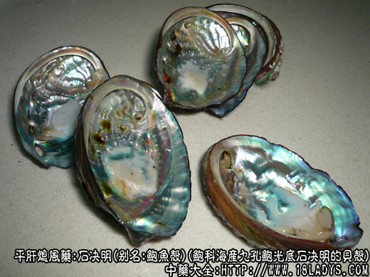

本品为常用中药。始载《名医别录》，列为上品。因附石而生，功能去翳明目，故名。原动物品种较多，常见商品主要有光底海决、毛底海决和大海决三种。
别名：鲍鱼壳。
来源：为鲍科海产单壳软体动物九孔鲍光底石决明和盘大鲍（毛底石决明）和羊鲍的贝壳。分布于沿海地区的海中岩礁间。国产及进口均有。
产地：
（1）光底海决（九孔鲍）主产于广东、广西。
（2）毛底海决（盘大鲍）主产于山东、辽宁、台湾、国外朝鲜、日本亦产。
（3）大海决（样鲍决）主产于印尼、非洲、澳洲。
性状鉴别：
（1）光底海决：呈椭圆形或耳状，大小不一，一般长3～10厘米，宽2.5～7.5厘米，呈右旋的螺形。故有右石决明之称。壳外表面棕色或灰棕色，洁净，具多数弧形的肋状条纹直至边缘，与左旋的生长线呈十字交叉、顶端钝，略凸出。由顶端向下，自第二螺旋开始至边缘有30余个逐渐增大的椭圆形突起和孔洞，列成一行，末端8～9个较大，且内外相同（吸水孔），孔口儿与壳平，故又称九孔石决明，壳内表面显真珠样光泽，壳较厚而坚硬，不易破碎，气无，味微咸。
（2）毛底海决：与光海决相似，一般较大，长5～14厘米，宽3～10厘米。壳外表面灰棕色或灰褐色，常有石灰虫、苔藓虫附着，凹凸不平，极粗糙，肋状纹理不明显，自第二螺旋开始至边缘有20余个类圆形突起的孔洞。末端4～5个呈孔状（吸水孔），孔口突出壳面。壳较薄，质较脆。气无，味微咸。
（3）大海决：壳大体圆，卵圆形，长约16厘米，宽约13厘米。壳顶接近中部，壳外表面灰黄色或灰棕色，有小海螺或苔藓攀附着，肋状条纹不显著，有20余个不明显的突起和孔洞。末端有4～6个呈孔状（吸水孔），孔口高出壳面。质坚硬，气无，味微咸。 以上三种，均以个大，壳厚，外表面洁净，内有彩色光泽者为佳。
主要成分：分碳酸钙、壳角质等。
药理作用：清泄肝热，其和用为镇静。
炮制：生用或煅用。
性味：咸、寒。
归经：入肝、肺经。
功能：平肝潜阳，明目清热。
主治：肝阳眩晕、惊风抽搐、目赤翳障、劳热骨蒸。入汤剂宜先煎，生用作用较强，煅用药力则缓。
临床应用：
（1）用于肝肾阴虚，肝阳上亢所致的头晕目眩、头痛头胀、耳鸣、失眠、高血压病而表现有上述症状者，常配养阴药，加强养阴潜阳（镇静、降压）作用，方如育阴汤。
（2）用于去翳膜，在眼科较常用，无论新旧翳膜，在方剂中都加入石决明，尤其适用于肝火炽盛兼有目赤羞明之星翳（角膜炎进行期所表现的翳障）常配菊花、连翘、荆芥、木贼、谷精草等清热明目药，对陈旧性翳膜（如角膜白斑），则多配蝉蜕、蛇蜕或密蒙花、夜明砂等，治疗原理有待进一步研究。
（3）用于肝肾阴虚的骨蒸劳热，尤其表现颜面潮红的低热病人更合用（多见于结核病植物神经功能紊乱的神经性低热等），常与干地黄、丹皮、鳖甲等配伍，取其有清热潜阳的作用。
此外，前人经验认为石决明以通“五淋”，现代也有用本品旱莲草、桃胶等治泌尿系炎症。
用量：15～35g，入煎剂宜先煎。
处方举例：育阴汤：石决明15g（先煎），桑寄生18g，旱莲草18g，生地9g，熟地9g，茅根18g，水煎服。
附：鲍鱼：又名鲍鱼肉，味辛、咸、性温、平。含蛋白质，又其浸液含有抗病毒的物质。有报道，市售的罐头鲍鱼汁有抑制骨髓灰质炎病毒的作用，未加工的鲜鲍鱼汁具有抗金黄色葡萄球菌的作用。中医经验认为鲍鱼能滋补肝肾，慢性病肾虚患者（尤其慢性肾炎、肺结核），肾阴虚而肝阳上亢之高血压、贫血或老年人肝虚小便频数，均宜用之。又以本品配麻仁、葱等煮汤，能通乳汁。每次用量：干鲍鱼末2～2.5g，装胶囊服，入煎剂则用2.4～9g，可切片煎汤代水煮其它药。更常用以煮成肉汤，或炖鸡、炖水鸭，做补品服。
注：
（1）商品主要分为光底海决与毛底海决两类。华东地区区分严格，将光底海决称“真海决”质量最好；将毛底海决称“关海决”或“冲石决”质量较次，且价格相差悬殊。京、津两市同等药用，但也以前者品质较好。大海决，因壳内附着物多，真珠层较薄、质量较次。
（2）除上述三种外，尚有耳鲍，主产于广东及西沙群岛。其贝壳较小而狭长，略弯曲，呈耳状。大小不一，大者长约10厘米左右，宽为长的1/2，顶端钝，外表面棕褐色或棕绿色，光滑无肋。自第二螺旋开始至边缘有30个左右椭圆形突起，末端有5～7个呈孔状（吸水孔），孔口与壳面平、壳薄、质坚硬。气无，味微咸。也列为光底海决类。